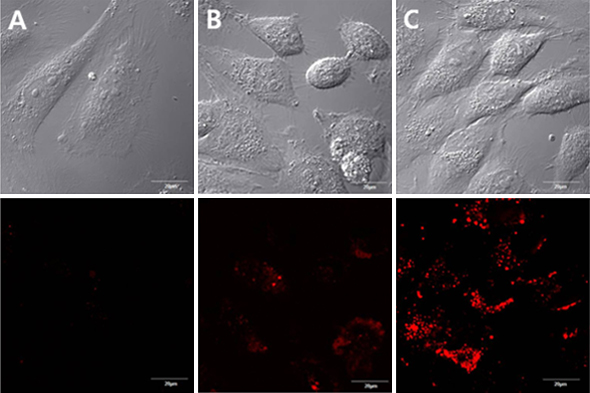
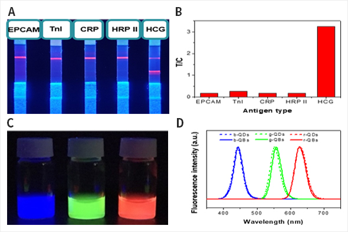

제품소개
Bio Quantum Dot
-

Bio Quantum Dot 을 이용한
breast cancer cell targeting -

Bio Quantum Dot 을 이용한 임신진단 키트 응용
LFA test was performed. a) photographic image under UV-lamp and b) corresponding T/C ratio of each antigen. c) Photographic image of brush type R, G, B QBs and d) corresponding PL emission data.